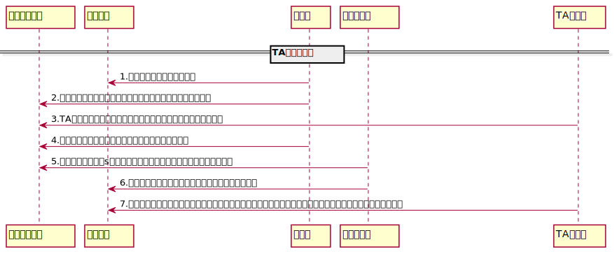

TA講座
このページについて
- このゲームの基礎戦術であるTA(タイムアタック)及びTD(タイムディフェンス)の解説講座です

-->各手順の詳しい解説、注意点
- 指揮役がターゲットを偵察
- 友好同盟やネーションルールによる保護下にないか確認
- 指揮役がターゲットの地点と偵察結果を同盟チャットに共有
- 座標に間違いがないように注意
- ターゲットの駐留戦力にも注意
- TA参加者各自はターゲットへの行軍時間を同盟チャットに共有
- 行軍時間を確認する際、実際に出撃させる部隊編成の行軍時間を確認すること。部隊編成によって行軍時間が変動するので注意。
- 行軍時間の確認方法は、ターゲットをタップして表れる『攻撃』ボタンを押し、右下の『実行』ボタンの真上に記載された時間で確認できる。
- 指揮役が行軍時間が最も長い人にスターターを依頼
- 指揮役は基本経験者が請け負うはずなので問題はないかと思いますが、指揮役は誰がスターターなのかをわかりやすくするためにも「＠〇〇：スターターお願いします」と、分かりやすい書き方にしてください。
- スターターが「〇s」 と、何秒後に出発するのか同盟チャットに共有
- この手順がスキップされてしまうと、スターターの出撃に気づけない参加者が出てくるので、スターターは必ず実行してください。
- スターターと後続の行軍時間にあまり差がない場合、普段より長めの予備時間(10s等)を設けることをオススメします。
- 〇秒後、スターターがターゲットに向けて行軍開始
- 可能な限り、〇秒後のタイミングからズレないよう心がけましょう
- 参加メンバーは各自、スターターの残り進軍時間と自分の行軍時間が合うようにタイミングを計って行軍開始
- 基本的に、『同盟戦争』画面から現在の行軍一覧状態が確認できるので、行軍一覧より対象の行軍を押し、参加者各自それぞれの行軍時間が確認できる状態にしておきましょう。
- 全体(表題)の行軍時間はターゲットに着弾する最速の行軍時間となりますので、それを基準に行軍を開始してしまうと、スターターからズレた時間で出撃してしまうので、必ずスターターの残り行軍時間に合わせて出撃しましょう。